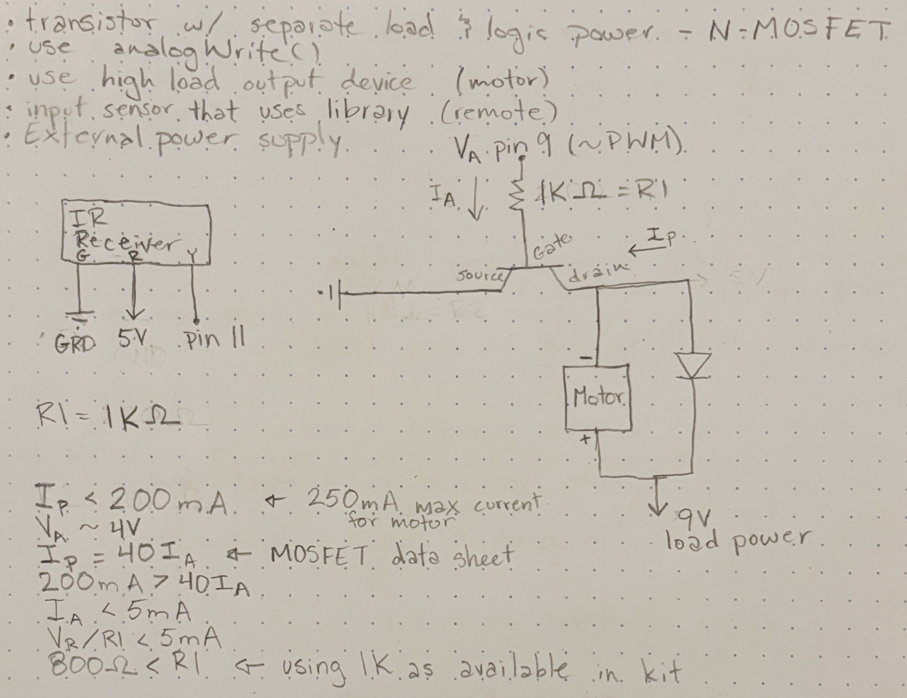

Vivian's Assignment 5!
Here is all the documentation for assignment 5!
Schematic

Resistor choices
I chose a 1K resistor for R1 to limit the current supplied by the Arduino based on the calculations included in the photo.

Code
//allows methods from IRremote to be used, to use the IR remote and receiver
#include
//establishes 9 as motorPin to refer to pin 9
int motorPin = 9;
//establishes 11 as irPin to refer to pin 11
int irPin = 11;
//function run once when Arduino is powered on
void setup() {
//establishes the motorPin as a source of high voltage
pinMode(motorPin, OUTPUT);
//starts serial communication at 9600 baud
Serial.begin(9600);
//establishes irPin as a receiver for signal from the ir receiver
IrReceiver.begin(irPin);
}
//function run over and over while the arduino is powered on
void loop() {
//checks if a new signal has been received from the ir receiver
if (IrReceiver.decode()) {
//establishes the variable name command as the data received from the ir receiver
int command = IrReceiver.decodedIRData.command;
//prints the command received to the serial monitor as a HEX code for debugging
Serial.println(command, HEX);
//if the HEX code associated with button 0 is pressed, a 0 analog signal is sent to the motor
if (command == 0x16) analogWrite(motorPin, 0);
//if the HEX code associated with button 1 is pressed, a 50 analog signal is sent to the motor
if (command == 0x0C) analogWrite(motorPin, 50);
//if the HEX code associated with button 2 is pressed, a 67 analog signal is sent to the motor
if (command == 0x18) analogWrite(motorPin, 67);
//if the HEX code associated with button 3 is pressed, a 85 analog signal is sent to the motor
if (command == 0x5E) analogWrite(motorPin, 85);
//if the HEX code associated with button 4 is pressed, a 113 analog signal is sent to the motor
if (command == 0x08) analogWrite(motorPin, 113);
//if the HEX code associated with button 5 is pressed, a 142 analog signal is sent to the motor
if (command == 0x1C) analogWrite(motorPin, 142);
//if the HEX code associated with button 6 is pressed, a 170 analog signal is sent to the motor
if (command == 0x5A) analogWrite(motorPin, 170);
//if the HEX code associated with button 7 is pressed, a 198 analog signal is sent to the motor
if (command == 0x42) analogWrite(motorPin, 198);
//if the HEX code associated with button 8 is pressed, a 227 analog signal is sent to the motor
if (command == 0x52) analogWrite(motorPin, 227);
//if the HEX code associated with button 9 is pressed, a 255 analog signal is sent to the motor
if (command == 0x4A) analogWrite(motorPin, 255);
//continues to look for signal from ir receiver
IrReceiver.resume();
}
}
Video
Questions
-

-
If the input device gives erroneous reading 1% of the time, you can set reasonable limits on the value and replace outliers with the most recent valid reading. For example:
long harmonicaRead = harmonica.capacitiveSensor(30); if(harmonicaRead > 3000 || harmonicaRead < 15){ harmonicaRead = prevHarmonicaRead; } -
If the value is randomly deviating from the true measurement by 10% you can increase the samples taken to constitute a read. This will smooth the data more so the 10% deviations are not as noticeable in the data. For example use:
Instead of:long harmonicaRead = harmonica.capacitiveSensor(100);long harmonicaRead = harmonica.capacitiveSensor(30);